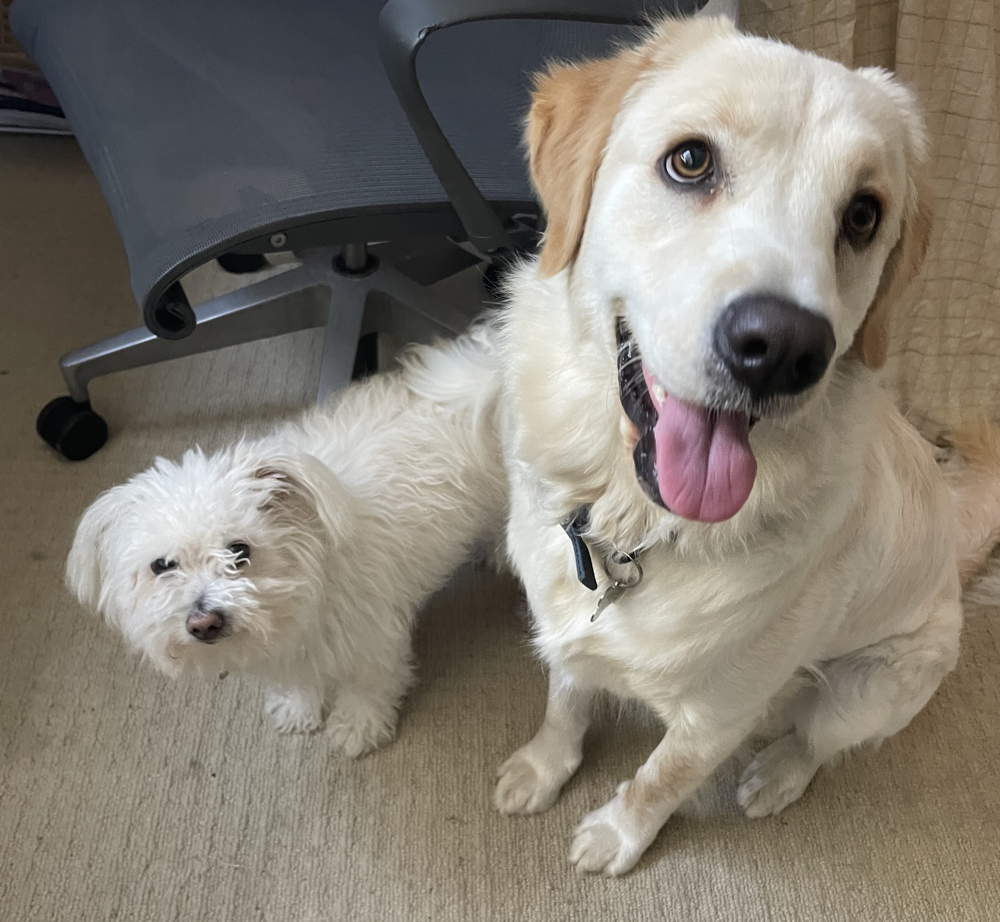

I grew up in a town called Alameda in California. Growing up, I had always been fascinated with learning math and science in school, and had a penchant for teaching myself parts of those subjects outside of what I learned in class. When I came to college, I decided to enter the field of engineering because I have always been a problem solver, and I always had a fascination with solving puzzles.
Though I am from California, and enduring the cold is not my forte, I can't deny how pretty the snow is in the winter. Here is a cozy picture I took from my apartment in Ithaca!

Throughout high school, I played tennis, and I still try to play as much as possible in college. Here's a picture of me serving at the Cornell tennis courts!
At home, I have the cutest dogs! On the left is a pomeranian-poodle named Oski and on the right is a golden retriever labrador named Kona.
When I find myself with free time, I love to whip out a jigsaw puzzle. I like to challenge myself with puzzles with more and more pieces. Here's a puzzle of Michonne from The Walking Dead series!

Also, I'll take any chance to capture a beautiful sunset, and luckily, I can find a lot of them in Ithaca, and in Alameda. This is one of my favorite sunsets from Ithaca!
Another one of my hobbies is trying new foods, and I am always looking forward to going on a new tasting adventure. Here's some of my favorite dishes!